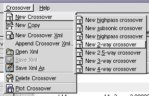
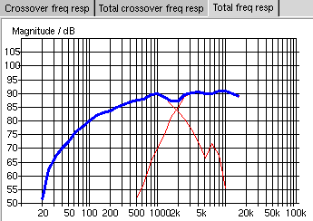
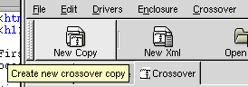
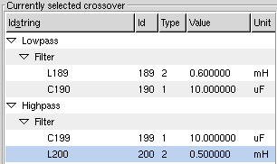

A simple crossover network
First we are going to design a crossover network using only one midrange and a tweeter to make the design procedure as simple as possible. Choose Crossover/New Crossover/New two way crossover (see figure 1) from the menu.

Figure 1: Select new two way crossover from the menu
To the left on the crossover tab you have the "Crossover wizard" (figure 2) which is sort of a control panel where you can change basic parameters of a crossover.

Figure 2: the crossover wizard
Here we design a filter for a loudspeaker with two drivers, one woofer/midrange and one tweeter. The upper part of the crossover wizard corresponds to the filter for the woofer/midrange, the lower part is the filter for the tweeter. Select Seas L14RCY/P in the upper part and select Morel MDT32-S in the lower part. Select 2nd order, Butterworth as type and 2200 as crossover frequency for both networks. This is probably the most simple filter you could build for these particular drivers.

Figure 3: the components required for the filter

Figure 4: frequency response of the filter

Figure 5: estimated frequency response of the total loudspeaker system
In figure 3 you can see the components required to build this filter. You can see that the frequency response of the electronic components is very straight (figure 4) but as you can see in figure 5 the frequency response is not very smooth. The magnitude of the frequency response increases with respect to the frequnecy. We will deal with this problem in one of the following chapters.

Figure 6: hit New Copy to create a copy of the currently selected crossover network
So far we are happy with the result. Maybe we want to save this state of our work? Fortunately it is very ease to save different version of crossovers in GSpeakers, just hit New copy in the toolbar and you will get a new copy of the currently selected crossover.

Figure 7: real world component values

Figure 8: filter frequency response with real world component values
The component values that you can see in figure 3 may not be values avaliable in the real world. You can try to change this values to real world values and inspect the resulting crossover frequency response. To do this you click with your left mouse button inside "the cell" where the value is, then the value will become editable. Press enter or tab to store the new values and make GSpeakers update the graphs. Inspect the new component values in figure 7 and the resulting crossover frequency response in figure 8. Since the crossover frequency response is pretty much the same the resulting total frequency response will look the same.
Now you may want to take a new copy of this filter and maybe you want to save the filter xml file by pressing the toolbar save button.
A crossover network built with this technique might work out just fine for you particular loudspeaker but for the loudspeaker in our example we have to do some more work. GSpeakers contains much more powerful crossover design functions. Read next chapter to learn more...